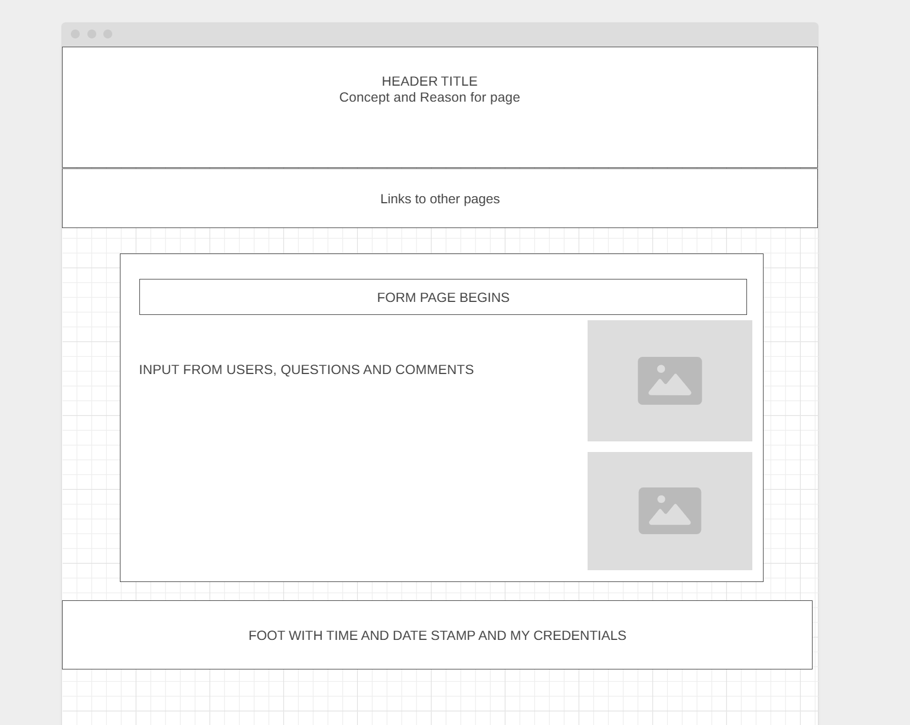

Site Name
Bakers Kneed Dough
This name reflects the playful and fun nature of the site, combining a fun pun on "kneading dough" with the idea of bakers supporting one another.
Site Purpose
The purpose of this site is to create a platform for bakers to post pictures, share comments, and ask questions about baking-related topics. It will also feature exclusive content and tools for paid members. (TBD)
Scenarios
- How can I improve the texture of my sourdough bread?
- What is the best substitute for buttermilk in a cake recipe?
Color Scheme
- Warm Yellow: Used for headers and accents.
- Soft White: Used as the primary background color.
- Slate Blue: Used for text and links to maintain readability and contrast.
Typography
- Headings: 'Lora', serif (or similar).
- Body Text: 'Roboto', sans-serif for readability.
Wireframe
Home Page (Desktop View)
